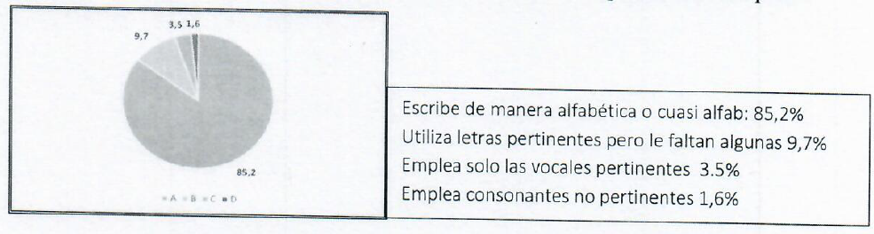
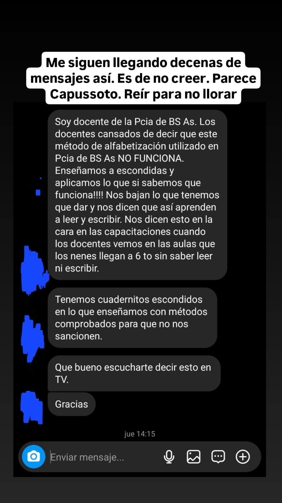
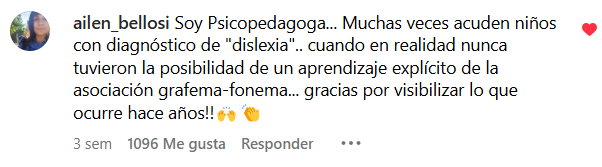
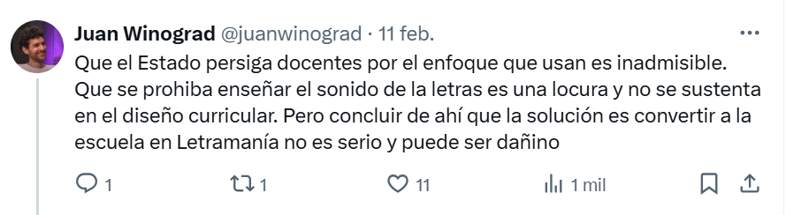

Este es un ensayo en respuesta a las críticas que hicieron Federico Milman y Vanesa Giordano a mi entrevista en lo de Alejandro Bercovich, en Radio con Voz, y al documento que publiqué sobre alfabetización. Sé que el documento se estuvo leyendo y discutiendo en diversos ámbitos de la comunidad educativa y celebro el debate.
Cuando publiqué el documento, aproveché además, en un reel de presentación que publiqué en diferentes redes, para reiterar una denuncia que vengo haciendo hace tiempo: que en muchos lugares de la Argentina se les está prohibiendo a los docentes enseñar explícitamente el sonido de las letras a la hora de alfabetizar. No se les permite decir que la sílaba "ma" se compone de dos sonidos: "mmmm" y "aaa", así, estirando el sonido de cada letra. Esa simple enseñanza explícita del sonido de las letras es considerada perjudicial para el aprendizaje (lo que es demostradamente falso).
Federico Milman hizo su crítica en el programa de Bercovich, quien, la semana siguiente a la que estuve yo, lo invitó para discutir y refutar varias de las ideas que yo había esbozado. Vanessa Giordano hizo sus críticas en un artículo titulado "Nos quieren idiotas. A propósito del falso debate sobre el método de alfabetización" en la revista Gloria y Loor.
Defiendo aquí tres de mis ideas: (1) que en muchas provincias está vedada a muchos docentes la enseñanza explícita del sonido de las letras, ya que muchas directoras y supervisoras lo prohíben, (2) que toda la evidencia científica apunta para el otro lado, recomendando enseñar los sonidos de las letras al inicio de la alfabetización y (3) que, más allá de que se vede en la práctica o no, en muchas provincias, incluyendo la Provincia de Buenos Aires, está prohibido por ley porque va contra la mejor interpretación posible de los diseños curriculares.
Si en vez de leer este documento preferís escucharme contándolo, podés ver este video.
01En muchas cosas estamos de acuerdo
Quiero empezar aclarando que me pareció muy bueno el tono de las críticas. Me parece que no hubo ni chicanas agresivas, ni golpes bajos, y, por lo menos en mi entendimiento, pareciera que no desconfían ni de mi honestidad ni de mis buenas intenciones.
Por mí parte, vale aclarar que creo que el 99,99% de las personas que en este debate critican mi visión, o que no están de acuerdo conmigo, están siendo honestas y tienen buenas intenciones. También Federico y Vanessa (de aquí en adelante voy a llamarlos por sus nombres, Federico y Vanessa; disculpen, Federico Milman y Vanessa Giordano, si no les gusta esto: me avisan y ya en las próximas charlas que tengamos, los llamo como ustedes prefieran; pero, bueno, aquí por una cuestión de brevedad voy a decirles Federico y Vanessa).
También quiero empezar comentando algunas cosas en las que creo que sí estamos de acuerdo:
1.1. Una de las cosas que me gustó mucho ya al principio de la entrevista con Federico es que, cuando Bercovich le dió la bienvenida, él agradeció e hizo notar la raridad de la situación de ver a un docente en un medio grande de comunicación. Creo que tiene mucha razón cuando celebra que se lo haya invitado a charlar porque debería pasar mucho más seguido. Sólo se llama a docentes a los medios cuando hay conflictos gremiales, paros, o conflictos salariales, lo que no está mal, pero estaría bueno que se los llame durante todo el año. Los políticos se la pasan hablando de educación, los periodistas en los medios hablan mucho de educación, pero los docentes no están en los medios. Entonces, estoy completamente de acuerdo con que la presencia de docentes en medios de comunicación debiera ser algo mucho más común.
1.2. Creo que también estamos de acuerdo en repudiar el nuevo reglamento escolar que se intentó imponer en CABA. Es algo directamente medieval, donde los docentes y las docentes tenían prohibido expresar sus opiniones, algo completamente repudiable, sólo comparable al documento del gobierno nacional diciendo barbaridades en cuestiones de salud mental.
1.3. Otra cosa en la que estamos de acuerdo es que hay un enorme problema con las nuevas tecnologías, que están transformando profundamente la educación. Vanessa en su texto dice: "Un fenómeno particular ocupa la atención de muchos y muchas especialistas en los últimos años: la disminución de la lectura y la escritura tal como las conocíamos en el siglo pasado. La primacía de lo audiovisual que nos trae Tik Tok, los textos breves y poco complejos de X (ex Twitter), el protagonismo de la imagen en Instagram… todo ello nos hace leer y escribir menos y más simple. En la infancia, además, se suma otra enorme preocupación: la disminución de los tiempos en el que los niños y las niñas juegan con otros y el achicamiento del repertorio de juegos posible".
Estoy completamente de acuerdo con ese párrafo.
1.4. La caradurez de los políticos: una cosa que particularmente celebré mucho, y me parece muy importante en este debate, es que tanto Federico como Vanesa reconocen que existe un problema muy grave con la alfabetización. En su escrito, Vanessa dice "es momento de tomar el guante y pensar qué hacemos con los datos de la realidad: ha aumentado el número de estudiantes que terminan la primaria sin saber leer ni escribir con solidez. Sin dudas, un dato que nos deja sin palabras por la gravedad que implica para el desarrollo de la ciudadanía". Estoy completamente de acuerdo. ¿Y por qué pienso que es importante que ellos lo reconozcan? Porque no es lo que reconocen los políticos.
De hecho, cuando se me nota la indignación, no es para nada hacia los docentes, que, pienso, son víctimas, incluso quienes siguen defendiendo ideas que yo pienso que son equivocadas sobre cómo los chicos se alfabetizan.
Pero lo que sí me indigna son los políticos. Porque mienten descaradamente y ni siquiera reconocen que hay un problema grave. Como ejemplo capusottiano, bizarro, surreal, está el Plan de alfabetización que presentó la provincia de Buenos Aires en la resolución 471 del Consejo Federal de Educación, en Mayo de 2024.
Al principio de ese documento, ya en la página tres, se hace un diagnóstico de la situación y se dice, literalmente: "Al regresar a la presencialidad, implementamos una instancia que podría dar respuesta a parte de nuestras preocupaciones. Se dio en llamar prueba escolar y en parte permitió actualizar datos acerca del proceso de alfabetización. Presentamos aquí sólo los resultados de escritura de palabras en tercero (tercer grado). Recordamos que estos grupos integraban la cohorte que cursó primero y segundo en la no presencialidad plena".
¿Y cuáles son los resultados? Muestran un gráfico en el que dividen los desempeños en escritura en cuatro niveles y muestran... ¡que el 85,2% de los estudiantes de la Provincia de Buenos Aires en tercer grado está en el nivel más alto! (por cierto, el gráfico está muy mal hecho, yo lo mandaría rehacer si un grupo de estudiantes del primer año de la facultad me lo presentara en un trabajo práctico, pero eso dejemoslo de lado).

Para empeorar las cosas, en el párrafo siguiente dicen que después de los programas remediales llamados +ATR y Maestros Alfabetizadores, solo quedaron el 5% por fuera del nível más alto.
Es decir, en el último documento oficial de la Provincia de Buenos Aires se dice que el 95% de los chicos de tercer grado de la provincia escribe de acuerdo al mayor nivel de escritura esperado. Singapur, un poroto. Parece joda.
De nuevo: quienes escriben estas sandeces son políticos, no docentes. Los docentes saben que esto no es así, y por eso creo que Vanessa y Federico no lo ponen en cuestión, reconocen el problema. Una gran especialista con la que conversé el otro día me decía que una dificultad en la Argentina es que muchas personas siguen pensando que tenemos niveles de alfabetización que son ejemplo en América Latina, pero ya no es verdad.
02¿Prohíben a los docentes enseñar el sonido de las letras?
Vayamos ahora a nuestras diferencias.
2.1. Fingir demencia: el gran elefante en la habitación de muchas de las personas que me critican, incluso Federico, aunque no del todo Vanesa –ya lo veremos–, es la prueba contundente de que en muchos lugares del país no dejan a las docentes enseñar explícitamente el sonido de las letras. Les dicen que no pueden hacerlo: no pueden decirle a un chico que la letra F suena "fffff", o que la letra S suena "sssss", por ejemplo.
Tengo un montón de pruebas: capturas de pantallas y testimonios de a centenas. Muchos son comentarios en mis publicaciones en redes, comentarios de personas reales y que están a la vista de todos. Esta evidencia es un gran elefante en la habitación porque muchos de quienes me critican ni siquiera la mencionan o, peor, como Federico, la niegan: en el minuto 7:08 de la entrevista, Bercovich le pregunta sobre estas prohibiciones y Federico responde "es una estupidez, con el perdón de Rieznik". No lo dice agresivamente, así que todo bien. Después, en el minuto 8.40, Bercovich insiste, vuelve a preguntar, y Federico responde "presiones hay de todo tipo" y "los docentes tenemos ciertas libertades", nuevamente negándolo.
La verdad que no termino de entender si Federico piensa que falsifiqué las capturas de pantalla, o que le pedí a alguien que me las escriba y mande... o tal vez cree que estas docentes son paranoicas, delirantes... no sé. Realmente no sé. Es una pregunta que me hago.
Vanessa parece tener una posición un poco diferente. En su escrito, si bien no es que se solidarice con las docentes a las que no les dejan enseñar el sonido de las letras, ni que les dé su apoyo, parece reconocer que esto está pasando cuando dice "¿cómo es posible que algunos educadores, directivos y supervisores hayan interpretado que la psicogénesis no incluye el trabajo con la relación entre letras y sonidos, como sí plantea la conciencia fonológica?".
En definitiva, hay un cierto "fingir demencia" como si estos testimonios y denuncias no existieran. Pero entonces, toda esta evidencia que estoy presentando, ¿qué es?
2.2. Mi perspectiva, o por qué tengo estos mensajes en mi celular: a continuación voy a mostrar algunos de los mensajes que recibo, la evidencia. Pero antes déjenme contarles un poco cuál es el origen de esta evidencia.
Hay una crítica que suele aparecer en forma de chicana, pero que tiene un punto, y es la de quién soy yo para hablar de esto. ¿Por qué un doctor en física, especialista en neurociencia y en comportamiento humano habla de esto? ¿Por qué tengo estas evidencias? ¿Cómo me llegaron? Es válida la pregunta porque explicitar la perspectiva desde la cual uno habla siempre ayuda a clarificar sus ideas e intenciones.
Lo que me pasó a mí fue más o menos lo siguiente: de muy chiquito me encantaba la magia; mi primer profesor de magia fue Charlie Brown, un mago muy conocido en esa época. A los diez años hice mi primer show de magia para mi familia. Más adelante, construí una vida académica en la Física, pero en un momento, en el 2009, vi un un show llamado "Mathemagic" ("Matemagia"), del estadounidense Artur Benjamin, y me encantó. Era matemática pero parecía magia. Empecé a practicarlo y a hacer presentaciones de "Matemagia" y, para hacer la historia corta, terminé durante cinco años, desde el 2012 al 2016, haciendo cuatro funciones por semana, seis meses al año, en Tecnópolis.
Era un show de cuarenta minutos de duración llamado Matemagia. Tenía que entretener a chicos y chicas de todo el país: en cada función había de cincuenta a novecientos estudiantes de primaria y secundaria de todo el país (venían en micros desde todas las provincias). Se hacía en La Nave de la Ciencia, un domo hermoso ahí en Tecnópolis. Y había muchas veces chicos y chicas de los sectores socioeconómicos de menores ingresos. Para mí fue una experiencia más que gratificante y enriquecedora.
¿A qué viene esto? Que ahí empecé a charlar mucho con docentes. Porque los estudiantes venían con sus docentes. Y ahí empezaron a invitarme mucho a las escuelas: a hacer shows de Matemagia en provincias de todo el país. Y no solo shows, porque justo coincidió con el momento de mi vida, a los treinta años, en que empecé a transicionar desde la física a la neurociencia y las ciencias del comportamiento.
Por entonces empecé a especializarme también en neurociencia del aprendizaje y empecé a publicar mis primeros papers, artículos científicos, sobre neurociencias cognitivas. Los primeros fueron sobre cómo aprendemos cálculo mental, cosas más de matemáticas. Pero eso me llevó a recorrer, diría yo, el país. Seguro estuve en más de diez provincias, probablemente quince o más. Incluso me presenté en Uruguay, Brasil, Chile, Colombia, Costa Rica. Siempre haciendo presentaciones para docentes y alumnos sobre enseñanza, neurociencia del aprendizaje, etc.
Como en ese momento ya empecé también a tener un poco de visibilidad en los medios, porque conduje junto a Eugenia López durante siete años La Liga de la Ciencia en la TV Pública, muchos docentes en confianza empezaron a contarme lo que ahora denuncio.
A mí la situación me parecía absurda y bizarra, no lo podía creer. ¿No les dejan a los docentes enseñar el sonido de las letras? ¿Me estás jodiendo? Pero es real: hace ya varias décadas, a muchos docentes se les empezó a prohibir enseñar explícitamente el sonido de las letras. Todo fruto de algunas creencias equivocadas sobre cómo aprenden los humanos que se masificaron en ese momento.
2.3. El origen de las pruebas: pasado el tiempo, cuando el año pasado hablé de este tema en varios medios, arrancó la avalancha. Empecé a recibir mensajes de a decenas a través de mis redes sociales. Van tres ejemplos (las capturas de pantalla están un poco más abajo):
"Soy docente de la provincia de Buenos Aires. Los docentes cansados de decir que este método de alfabetización utilizado en la provincia de Buenos Aires NO FUNCIONA. Enseñamos a escondidas y aplicamos lo que sí sabemos que funciona. Nos bajan lo que tenemos que dar y nos dicen que así aprenden a leer y escribir. Nos dicen esto en la cara en las capacitaciones cuando los docentes vemos en las aulas que los nenes llegan a sexto sin saber leer ni escribir. Tenemos cuadernos escondidos en los que enseñamos con métodos comprobados para que no nos sancionen. Qué bueno escucharte decir esto en la TV, gracias".
Bizarro, capuzotiano, surreal, como quieran llamarlo. Es para hacer una peli: una distopía en la que a los docentes les prohíben enseñar el sonido de las letras. Otro ejemplo:
"(..) estoy terminando la especialización en alfabetización inicial en la Universidad Nacional de Hurlingham. Seguimos por esta línea de trabajo. Soy directora en Pilar, en el nivel inicial. En nuestras capacitaciones como equipo directivo no nos dejan trabajar con este método, el método que sí enseña explícitamente sonido a las letras. Terrible, sos un capo, de a poquito vamos a ir construyendo conciencia fonológica".
Tengo centenas de mensajes así. Va uno más:
"Hola, no es casualidad, soy estudiante de la licenciatura en psicopedagogía y en mis prácticas en escuelas de provincia me explicaron que los lineamientos y resoluciones desde el Ministerio de Educación de la provincia adoptan una perspectiva constructivista que se contradice con la alfabetización explícita (así le dicen a enseñar el sonido de cada letra por separado), por lo que esta última no se lleva a cabo. Nos dijeron que si pensábamos una intervención no podía ser desde el método DALE!, por ejemplo". El método DALE! fue desarrollado por la doctora e investigadora del CONICET, Beatriz Diuk, método en el que se enseña explícitamente el sonido de las letras.

Empezaron a mandarme mensajes así de a montones. Esa es la razón por la cual yo tengo todas esas capturas de pantalla y todas esas evidencias. Porque, como vieron que yo tenía visibilidad y que podía hacer la denuncia, me empezaron a escribir. Muchas docentes me escriben contándome esto, y cuando les pregunto si puedo publicar sus mensajes en mis redes, me dicen que sí, pero que por favor borre sus nombres porque sienten que si no las persiguen. Sé que la palabra perseguir es un poco fuerte. Se usa para cosas mucho más fuertes, como la persecución de intelectuales en una dictadura. No creo que las directoras y supervisoras de los colegios que prohíben enseñar explícitamente el sonido de las letras sean eso, ni de cerca. Para nada. Creo que son excelentes personas y que tienen una creencia equivocada. Pero no sé qué otra palabra usar si no es "perseguir" cuando las docentes me piden que borre sus nombres para publicar lo que me cuentan.
Otro elemento curioso de este rompecabezas es que, si bien es verdad que, cuando son personas dentro del sistema educativo, como los docentes, me piden que borre sus nombres antes de publicar sus mensajes, otras personas fuera del sistema educativo, como docentes jubiladas o psicopedagogas, no tienen problema en decirlo abiertamente, transformándose en la evidencia más contundente al respecto.
Basta entrar a cualquiera de mis publicaciones sobre este tema y vana ver esos comentarios. Yo recién entré a una de mis publicaciones y agarré las dos primeras que encontré. En la primera, @ailen_bellosi dice: "Soy psicopedagoga. Muchas veces acuden niños con diagnóstico de dislexia cuando en realidad nunca tuvieron la posibilidad de un aprendizaje explícito de la asociación grafema fonema. Gracias por visibilizar lo que ocurre hace años". En la segunda, @muy_lili dice: "Docente jubilada. Veinte años en primero y segundo. Estoy totalmente de acuerdo con lo que decís. El docente no podía usar los sonidos, pero la fonoaudióloga sí!!! Una lucha terrible!!!".

Yo fui criado en una familia progresista de izquierda, mi primera reacción cuando hay trabajadores perseguidos desde el Estado por hacer las cosas bien es apoyar a los trabajadores. Como que siento la obligación moral de compartir estos mensajes que recibo, de ayudar a denunciar la situación dado que la vida me puso en este lugar.
Hay un montón más de testimonios así. Y lo que no entiendo de la posición de Federico y otros es qué piensan sobre estos testimonios. No han sido claros al respecto. ¿Creen que los falsifico yo? Realmente no entiendo bien qué están pensando. Si piensan que son todos parte de una alucinación colectiva, o tal vez son docentes paranoicas y rencorosas.
No digo que esto le pase a la mayoría de las docentes. Pero hay centenas de miles de docentes de escuelas primarias en todo el país. Si una de cada mil quiere enseñar el sonido de las letras y no la dejan, son cientos. Tal vez sean cientos, no sabemos cuántas son, yo creo que son muchas más, pero, aun si son solamente unos cientos, alfabetizan a miles de chicos y tienen que tener el derecho a enseñar de esta forma que quieren enseñar.
2.4. Exijamos a las autoridades que terminen con esta persecución: estamos de acuerdo en que un docente no puede enseñar cualquier cosa. Si hubiera un docente que dijera que va a enseñar a cada chico de acuerdo a su signo del zodíaco, todos estaríamos de acuerdo en que eso no está permitido por el diseño curricular, es decir, está prohibido. Acá es lo contrario. Son docentes que han estudiado y leído sobre la ciencia de la lectura, que creen, como creo yo, y muchísima gente, que la evidencia muestra contundentemente que es importante para muchísimos chicos enseñar explícitamente el sonido de las letras. Y cuando van a hacerlo, no las dejan.
Tal vez son pocas, tal vez son una minoría, pero defendamos sus derechos. Solidaricémonos con ellas y exijamos a las autoridades que digan claramente que se puede alfabetizar usando métodos que enseñan explícitamente el sonido de las letras. No entiendo bien por qué tantas personas no dicen esto que se me hace tan elemental.
Podrían decir, por ejemplo, "Andrés Rieznik está diciendo tonterías, pero por supuesto repudiamos que a un docente no se le deje enseñar el sonido de las letras. Y por supuesto exigimos a Sileoni y a Torres, en Provincia de Buenos Aires, y a las autoridades de todas las provincias, que digan abiertamente que se pueden usar métodos que enseñan explícitamente el sonido de las letras, así terminan para siempre con esta situación que se arrastra hace años".
Dejémoslo claro: en la Provincia de Buenos Aires esto que llamo persecución se terminaría en dos microsegundos si Sileoni o Torres dijeran abiertamente a las supervisoras y directoras que interpretan que el diseño curricular no permite enseñar explícitamente el sonido de las letras que esa interpretación es incorrecta y que los docentes están autorizados a hacerlo.
Propuestas como el método DALE!, de Beatriz Diuk; o el método Integrando Pasos de Lorena Arrebillaga; o el método Kalulu, que se está desarrollando en Francia con la participación estelar de la genia de Melina Vladisauskas, una joven y brillante investigadora argentina. Hay un montón de métodos que los docentes podrían aplicar en sus secuencias didácticas en los que se enseña explícitamente el sonido de las letras. ¿Por qué no dicen abiertamente que se pueden usar? Que lo digan. Y se termina este debate. Yo diré "bueno, se ve que mi interpretación del diseño curricular en la PBA era equivocada" (igual más adelante voy a discutir un poco por qué pienso que no me equivoco en la interpretación del diseño curricular y pienso que las supervisoras y docentes que prohíben enseñar explícitamente el sonido de las letras están interpretando correctamente).
En este sentido, me parece correcta la posición de Juan Winograd, un docente y militante de izquierda, con el cual no concuerdo en un montón de cosas. Tenemos un montón de diferencias, pero cuando hice esta denuncia, él lo primero que dijo en un tweet fue "Que el Estado persiga a docentes por el enfoque que usan es inadmisible. Que se prohíba enseñar el sonido de las letras es una locura y no se sustenta en el diseño curricular". Yo pienso que sí se sustenta en el diseño curricular, pero bueno, él lo niega. Sin embargo, no niega el hecho de que muchas veces se prohíbe. Y a partir de ahí me empieza a criticar. Y está todo bien. La crítica es parte del debate público. Mi pregunta es: ¿por qué no es esta la reflexión de tantos que me critican? Estoy mostrando un montón de evidencia, hay testimonios por todos lados. No es una cuestión de interpretación. Es un hecho: hay supervisoras y directoras que están prohibiendo enseñar explícitamente el sonido de las letras.

Incluso debo confesar que no entiendo por qué ningún sindicato docente me escribió para decirme que quiere contactarse con los docentes perseguidos para defender sus derechos. Los gremios también fingen demencia. Como me pasa con Federico, no entiendo qué piensan los dirigentes sindicales sobre las evidencias que están a la vista de todos.
03Enseñamos mal a alfabetizar, y la evidencia es contundente
3.1. Hay que enseñar el sonido de las letras: el punto central del documento que escribí, punto que enfaticé en la entrevista con Bercovich, es que hace décadas la ciencia ha demostrado que, al contrario de lo que proponen las teorías constructivistas que se abrazan en la mayor parte de los profesorados de todo el país, la alfabetización ocurre mucho más rápida y fácilmente cuando se enseña explícitamente los sonidos de las letra o, dicho más técnicamente, cuando se enseña explícitamente la correspondencia entre fonemas y grafemas.
A modo de ejemplo, en los cuadernillos de Integrando Pasos, desarrollados por la doctora Lorena Arrebillaga basándose en la ciencia de la lectura, y que están disponibles gratis, se enseña y ejercita el sonido de cada letra. Por ejemplo, abajo hay una actividad propuesta para enseñar y practicar el sonido de la letra ele, donde se propone que los niños estiren los sonidos para así diferenciarlos mejor:
En esto, Vanessa y Federico parecen negar la realidad. Dicen que no es verdad que en los métodos constructivistas que se utilizan hoy en Argentina no se enseña el sonido de las letras. A mí me parece increíble que lo nieguen. ¿En qué cuadernillo para los alumnos del constructivismo se practica el sonido de las letras por separado? En ninguno.
Desde la publicación en 1979 de Los sistemas de escritura en el desarrollo del niño de Emilia Ferreiro y Ana Teberosky hasta hoy, los textos constructivistas aconsejan no enseñar explícitamente el sonido de las letras. En los cuadernillos del programa Continuemos Estudiando, que es el de la Provincia de Buenos Aires, por ejemplo, no se practica el sonido de las letras en ningún lado.
A modo de ejemplo (aunque basta leer un poco de esa literatura para darse cuenta de que Federico y Vanesa la están tirando al córner, negando la realidad), veamos un documento publicado en octubre de 2023 por la Provincia de Buenos Aires. El documento se titula El proceso de construcción del sistema de escritura, etapas e intervenciones docentes y la autora es Adriana Bello. Es un documento de 28 páginas donde las ideas constructivistas están expresadas con claridad, sin eufemismos, y, en mi opinión, está muy bien escrito. Al final del documento, la última sección se titula consideraciones finales y así empieza:
"Para concluir, nos parece importante aclarar una confusión en relación con algunas intervenciones que consideramos no se enmarcan en la concepción que sostiene el Diseño Curricular, como las que pretenden enseñar en forma directa las relaciones entre fonema y grafema. Tal como se sostiene en este documento, consideramos que esta no debería ser la idea que oriente las intervenciones docentes."
Enseguida agrega:
"En ningún momento se 'enseña de forma directa la relación entre sonido y letra', ya que la mayoría no podría comprenderla. Intervenir no significa “dictar” letra por letra, ni pronunciarlas exageradamente."
Más claro echale agua: nada de enseñar "de forma directa" el sonido de las letras ni estirar sus sonidos (pronunciarlas exageradamente). Esto va contra una montaña de evidencias que existe hace por lo menos 30 años. ¿Qué querrá decir con eso de que "la mayoría no podría comprenderla"? La evidencia muestra lo contrario: la enorme mayoría de los chicos puede comprenderla y aprender a leer en primer grado, incluso en contextos de pobreza.
Sin embargo, Federico y Vanessa niegan esta realidad. No estoy del todo seguro de por qué lo niegan. Federico, cuando Berco le pregunta, dice que sí se enseña el sonido de las letras. Evade la pregunta dando un ejemplo de cómo lograr que los niños se den cuenta de que la pe es una letra y entonces pregunten cúal es su sonido. En vez de decir que es verdad que no se permite estirar los sonidos o "pronunciarlos exageradamente", y que es verdad que no se puede enseñar el sonido de cada letra por separado, da una vuelta enorme para decir que sí le enseña pero de otro modo.
La respuesta que da Federico se parece a la que un directivo le dió a un padre cuando este le preguntó por qué no enseñaban a su hijo el sonido de las letras: "sí que enseñamos el sonido de las letras", le contestó el directivo. Y continuó: "Lo que pasa es que su hijo faltó a esa clase". Eso es tirarla al córner. Es no dar el debate. Es lo que hacen Federico y Vanesa cuando señalo que no se está enseñando el sonido de las letras por abrazar creencias absurdas falseadas por la ciencia hace décadas.
¿Y qué dice Vanesa? También niega la realidad, recuerden esta parte de su texto que ya cité: "¿cómo es posible que algunos educadores, directivos y supervisores hayan interpretado que la psicogénesis no incluye el trabajo con la relación entre letras y sonidos, como sí plantea la conciencia fonológica?, ¿qué llevó a pensar que la psicogénesis propone que los chicos y las chicas “descubran” por sí solos la relación entre fonema y morfema?". Mi respuesta a Vanesa sería decirle que lo que los llevó a pensar eso es haber leído los textos de Emilia Ferreiro y, por ejemplo, Adriana Bello, que cité más arriba. No se puede tapar el sol con la mano. El constructivismo desaconseja enseñar el sonido de las letras y exagerar su pronunciación. Si no es así, que muestren en qué cuadernillo del constructivismo se hace eso.
Más aún, si Federico y Vanesa creen que no hay problema en adoptar cuadernillos en los que se practiquen el sonido de las letras, en los que haya ejercicios para identificar los sonidos de cada letra aisladamente, por qué no le exigen a Sileoni y Torres que terminen con la prohibición a los docentes que quieren hacerlo?
3.2. ¿Dónde están las evidencias?
¿Qué dice Federico cuando Bercovich le pregunta por la evidencia en favor de lo que él defiende? Responde: "Nuestro método también es basado en ciencia y en evidencia".
¿Qué dice Florencia? Dice: "la psicogénesis y el constructivismo son desarrollos teóricos que se fundamentan en investigaciones científicas, realizadas por Piaget inicialmente, y luego enriquecidas por otros equipos de investigación (personalmente destaco los aportes de Vigotsky y los enfoques socio-culturales)".
Pero no citan las evidencias más que vagamente. Concretamente, ¿qué estudios se hicieron? ¿Con qué metodología? ¿En qué poblaciones? No los citan porque hace décadas que la evidencia que existe apunta para el otro lado. Lo paradójico es la diatriba de Vanesa al final de su artículo sobre la importancia de basarnos en la verdad:
"Pensar complejo está pasado de moda. Hoy vale más pensar rápido, actuar impulsivamente y no aburrirnos. Es más fácil dar un like o repostear una información, que analizar las fuentes o leer “entre líneas”. A tal punto que quienes seguimos promoviendo, en todos los aspectos de la vida, la complejidad como marco interpretativo, somos definidos, de forma despectiva, como “progres”. Pareciera que ahora ser progre no es progre.
Nos encontramos en una encrucijada: batallamos por la complejidad y por un análisis que nos permita arribar a soluciones reales, en un campo minado por el escepticismo simplista, el desprestigio del conocimiento y la cultura y el relativismo absoluto. Más allá de la posmodernidad y de la caída de la verdad como fundamento, entramos en una etapa en la que ya no importan los consensos científicos, los acuerdos democráticos ni la perspectiva de derechos (...)"
Me encantan esos párrafos, Vanesa. Me siento muy identificado. Por eso les pregunto, Vanesa y Federico: ¿dónde están las evidencias que sustentan la idea de no enseñar de forma explícita el sonido de las letras? ¿Qué estudio aleatorizado y controlado pueden citar? ¿Qué evidencia le da sustento a la idea, para mí terraplanista, de no exagerar la pronunciación de las letras a la hora de alfabetizar? (Por si hay otros a los que les cuesta la ironía como a mí: son preguntas retóricas, esa evidencia sencillamente no existe o es de mala calidad y por eso Federico y Vanesa no la citan).
04¿Está prohibido enseñar el sonido de las letras?
Más allá de que, como mostrado en la segunda sección de este artículo, en la práctica se lo prohiban a muchas docentes, ¿está prohibido enseñar el sonido de las letras? ¿Lo permite el diseño curricular o no? Porque el diseño curricular se tiene que cumplir. Como bien dice en su página 11 el Marco Curricular Referencial publicado en 2019 por el Gobierno de la Provincia de Buenos Aires, "los diseños curriculares son prescriptivos ya que determinan los conceptos disciplinares de cada campo de conocimiento –qué enseñar– y los modos de conocer –cómo enseñar–". Es decir, hay que enseñar como dice el diseño curricular.
Existen tres provincia enteras entonces en las que no hay duda de que no se puede enseñar de forma explícita el sonido de las letras: Jujuy, Neuquén y Río Negro. De hecho, en un informe publicado en marzo de 2025 por Argentinos por la Educación, las propias autoridades de las provincias declaran que su método es constructivista, y por supuesto los diseños curriculares no incluyen la enseñanza explícita de los sonidos de las letras, no se pueden enseñar. En esas provincias, cualquier directora o supervisora que le dijera a una docente que no puede hacerlo, estaría interpretando correctamente los diseños curriculares.
¿Qué pasa en la provincia con mayor cantidad de estudiantes del país? Desde Provincia de Buenos Aires es desde donde me llegan más reclamos de los docentes contando cómo las supervisoras y directoras las persiguen por enseñar el sonido de las letras. Eso está pasando y la evidencia es contundente. Ahora, ¿están esas supervisoras y directoras interpretando correctamente el diseño curricular? En mi opinión sí.
En Buenos Aires, el diseño curricular vigente es del año 2016, plena gobernación de María Eugenia Vidal. Y ese diseño es un amorfo medio raro. Dice, es verdad, en la página 51, que uno de los objetivos de la alfabetización es reconocer las relaciones entre los fonemas y los grafemas. Pero en ningún lado dice que se puede enseñar explícitamente el sonido de las letras. Y, como bien dice el Marco Curricular Referencial antes citado, se debe enseñar como dice el diseño. Entonces, no se puede.
De todas formas, si aún queda alguna duda, basta leer el último documento oficial de la provincia: el Plan Jurisdiccional de Alfabetización, antes citado, de Mayo de 2024. Es un manifiesto constructivista de la A a la Z. Entonces, si yo fuese juez y una supervisora o directora me dijera que ella interpreta que en los diseños curriculares de la Provincia de Buenos Aires no se permite enseñar explícitamente el sonido de las letras, yo le daría la razón. Dada la ambigüedad del diseño curricular y dado todos los demás documentos oficiales de la provincia, es la interpretación más parsimoniosa.
Pero no hace falta que lo diga yo, basta citar otro documento oficial que ya mencioné, el titulado El proceso de construcción del sistema de escritura, etapas e intervenciones docentes de autoría de Adriana Bello. Vale la pena repetir la cita del final del documento, donde la última sección se titula consideraciones finales y así empieza:
"Para concluir, nos parece importante aclarar una confusión en relación con algunas intervenciones que consideramos no se enmarcan en la concepción que sostiene el Diseño Curricular, como las que pretenden enseñar en forma directa las relaciones entre fonema y grafema."
E insiste enseguida que en el diseño curricular "En ningún momento se 'enseña de forma directa la relación entre sonido y letra', ya que la mayoría no podría comprenderla". Vaya a saber qué querrá decir con eso de que "la mayoría no podría comprenderla", porque, como ya dije antes, en su significado directo es simplemente falso, los niños comprenden perfectamente, cuando se les enseña de forma explícita, que cada letra tiene uno o más sonidos y viceversa, y memorizan esas relaciones para poder leer. Pero lo que queda claro en el documento es que Adriana Bello interpreta, y yo creo que en eso tiene razón, que de acuerdo al diseño curricular de la Provincia de Buenos Aires no se debe enseñar de forma directa la relación entre sonido y letra.
Ahora, insisto, si esa interpretación es incorrecta deberían Sileoni y Torres decirlo abiertamente y todo este debate se termina en dos microsegundos. Y hablo de Sileoni y Torres de PBA porque es de lejos la provincia más importante en términos de cantidad de estudiantes, pero en Córdoba, provincia con otro color político, pasa lo mismo.
05"Yo leí muy pocas cosas serias de las neurociencias que estén ligadas a la educación en la Argentina"
Hay una frase que dijo Federico Milman en la entrevista con Berco y que escucho mucho, creo que es una creencia muy masiva en ciertos ámbitos. Dice literalmente Federico en el minuto 6:40 de la entrevista: "Yo leí muy pocas cosas serias de las neurociencias que estén ligadas a la educación en la Argentina".
Las personas que desde la perspectiva de la neurociencia investigamos en educación en Argentina somos 90% muy progresistas y la mayoría solemos votar opciones de izquierda en las elecciones. Y así nos atacan nuestros compañeros. Eso es lo que tenemos que soportar todos los días. Esa frase es, diría yo, tal vez un poco fuertemente, y perdón Federico si así suena, una ofensa a un montón de investigadoras argentinas: doctoras de primer nivel internacional que hace muchos años vienen aportando a la educación argentina desde la perspectiva neurocientífica.
Y no solo creo yo que es un ninguneo hacia ellas, sino que es además un tiro en el pie de la defensa que tenemos que hacer del CONICET en un momento en que se lo ataca y se lo estigmatiza. Porque creo yo que una de las principales defensas es señalar que es probablemente el organismo del estado más meritocrático que existe, en el mejor sentido de la palabra. Nadie en el CONICET no estudió un montón. Nadie es poco serio. Incluso los investigadores constructivistas con los que no acuerdo: jamás diría que son poco serios. Creo que están equivocados, no que son poco serios. Y ninguna de las decenas de investigadoras del CONICET que aportan a la educación desde la perspectiva neurocientífica es poco seria.
Por último, quiero comentar un párrafo del texto de Vanessa que dice, sobre mi postura, que "la implementación de clases basadas en las “creencias” de la psicogénesis y del constructivismo se presenta, en una relación simplista y lineal, como la principal causa de los bajos resultados que se observan en los últimos años de la escuela primaria en torno a la escritura y la lectura".
Me hace mucho ruido lo de "la principal causa". Yo no dije eso. De hecho, no creo que lo sea. Si uno compara, por ejemplo, entre las provincias de mayor o menor nivel socioeconómico, verá una enorme diferencia que nada tiene que ver con el constructivismo. Ahora, eso no quiere decir que yo no crea que podríamos mejorar enormemente los niveles de alfabetización de muchos chicos y chicas si se enseñara mejor, aplicando la ciencia de la lectura y enseñando explícitamente el sonido de las letras.
Porque es verdad que existen muchísimos casos de chicos y chicas de bajos recursos socioeconómicos que no aprenden a leer y escribir simplemente porque nadie les enseñó correctamente el sonido de las letras. Es decir, creo que los métodos con los que se enseña a alfabetizar pueden explicar las diferencias entre individuos de una misma población, pero no pueden explicar las diferencias entre los promedios de las poblaciones. Es una diferencia sutil pero importante. Sobre el tema de cómo se estudian las diferencias individuales (no poblacionales), en mi último libro, Tabú, que puede leerse gratis online, cuento de los diferentes métodos con los que se estudian, incluyendo el capítulo 6, que es sobre la relevancia de esos estudios en educación.
Agradezco un montón que hayas leído hasta acá. Creo que quienes estamos participando del debate somos un montón de personas interesadas en educación, así que me encantaría escuchar sus opiniones. Agradezco una vez más a Federico y a Vanessa por el tono de sus críticas, sin agresiones ni golpes bajos. Ojalá podamos seguir conversando así. ¡Gracias por leer!